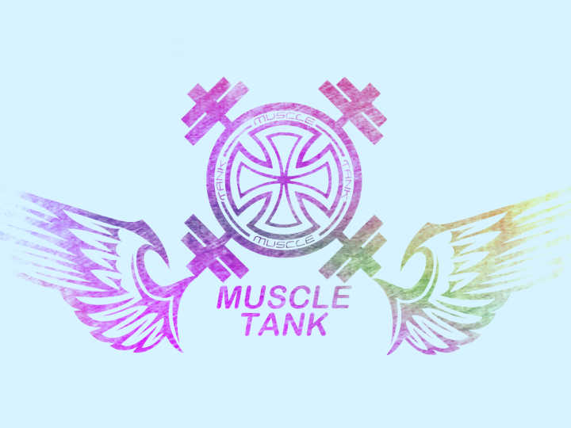

<!DOCTYPE html>
<html>
<head>
<meta charset="utf-8"/>
<title>practice</title>

<style type="text/css">
.m-demo{position:absolute;top:50%;left:50%;width:400px;height:400px;margin:-200px;perspective:1000px;cursor:default;}
.m-demo .box{position:absolute;width:100%;height:100%;transform-style:preserve-3d;-webkit-animation:rotate 5s 14s linear infinite  both;}
.m-demo .box img{width:400px;height:400px;}
/*.m-demo .box div{position:absolute;width:100%;height:100%;box-sizing:border-box;border:2px solid rgba(0,0,0,0);background:rgba(0,0,0,0);border-color:rgba(0,0,0,0.8);text-align:center;transition:1s linear;line-height:400px;font-size:50px;}*/
.m-demo .box div{position:absolute;width:400px;height:400px;box-sizing:border-box;border:2px solid rgba(0,0,0,0);background:rgba(0,0,0,0);border-color:white;text-align:center;line-height:400px;}
/**
 * transition:1s linear,设置是duration是1s,property默认是all;但是不知道有什么卵用，去掉效果是一样的
 * 
 */
/*通过每个面动画执行时间的不同，来实现每个面的顺序不冲突的展开*/
.m-demo .box .top{-webkit-animation:top 2s 2s linear both;}
.m-demo .box .bottom{-webkit-animation:bottom 2s 4s linear both;}
.m-demo .box .left{-webkit-animation:left 2s 6s linear both;}
.m-demo .box .right{-webkit-animation:right 2s 8s linear both;}
.m-demo .box .back{-webkit-animation:back 2s 10s linear both;}
.m-demo .box .front{-webkit-animation:front 2s 12s linear both;}
.m-demo:hover .box {-webkit-animation-play-state:paused;}
/*.m-demo:hover .box>div{border-color:rgba(0,0,0,0);color:#fff;}*/
/*.m-demo:hover .box {border-color:rgba(0,0,0,0);color:#fff;}*/
.m-demo:hover .box .top{background:rgba(255,255,0,0.8);}
.m-demo:hover .box .bottom{background:rgba(0,255,0,0.8);}
.m-demo:hover .box .left{background:rgba(0,255,255,0.8);}
.m-demo:hover .box .right{background:rgba(0,0,255,0.8);}
.m-demo:hover .box .front{background:rgba(255,0,255,0.8);}
.m-demo:hover .box .back{background:rgba(255,0,0,0.8);}
@-webkit-keyframes rotate{
    100%{-webkit-transform:rotate3d(1,1,1,360deg);}
}
@-webkit-keyframes top{
    100%{-webkit-transform:rotateX(90deg) translateZ(200px);}
}
@-webkit-keyframes bottom{
    100%{-webkit-transform:rotateX(-90deg) translateZ(200px);}
}
@-webkit-keyframes left{
    100%{-webkit-transform:rotateY(-90deg) translateZ(200px);}
}
@-webkit-keyframes right{
    100%{-webkit-transform:rotateY(90deg) translateZ(200px);}
}
@-webkit-keyframes front{
    100%{-webkit-transform:translateZ(200px);}
}
@-webkit-keyframes back{
    100%{-webkit-transform:rotateY(180deg) translateZ(200px);}
}
</style>

</head>
<body>
<div class="m-demo">
    <div class="box">
        <!-- <div class="top">top</div>
        <div class="bottom">bottom</div>
        <div class="left">left</div>
        <div class="right">right</div>
        <div class="front">front</div>
        <div class="back">back</div> -->
        <!-- <p></p> -->
        <div class="top"></div>
        <div class="bottom"></div>
        <div class="left"></div>
        <div class="right"></div>
        <div class="front"></div>
        <div class="back"></div>
    </div>
</div>
</body>
</html>